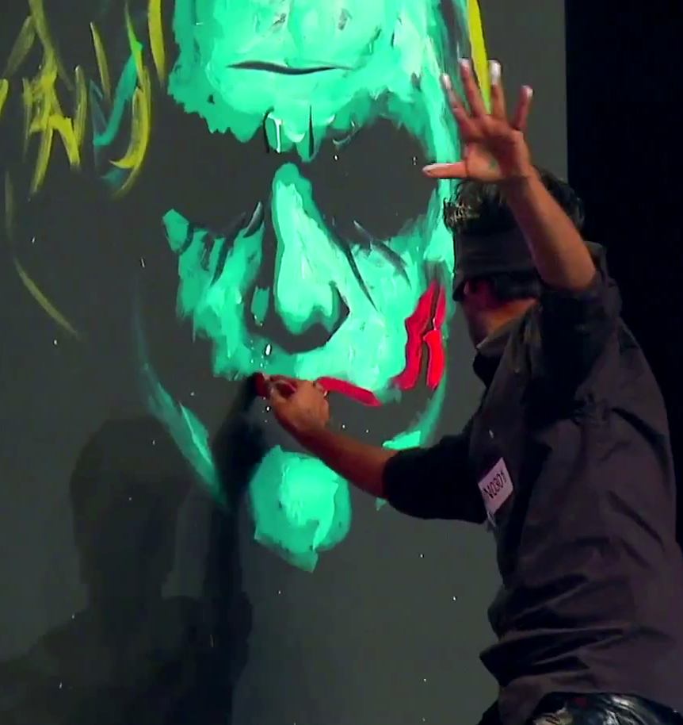
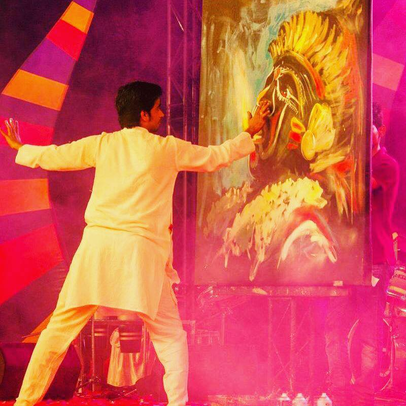
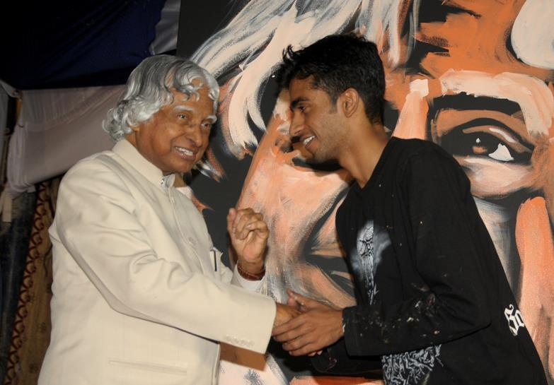
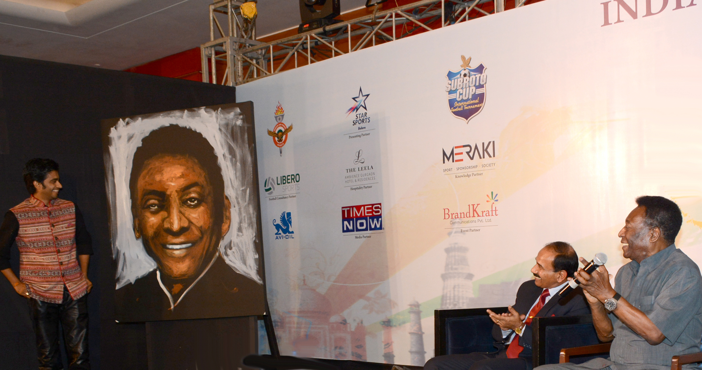
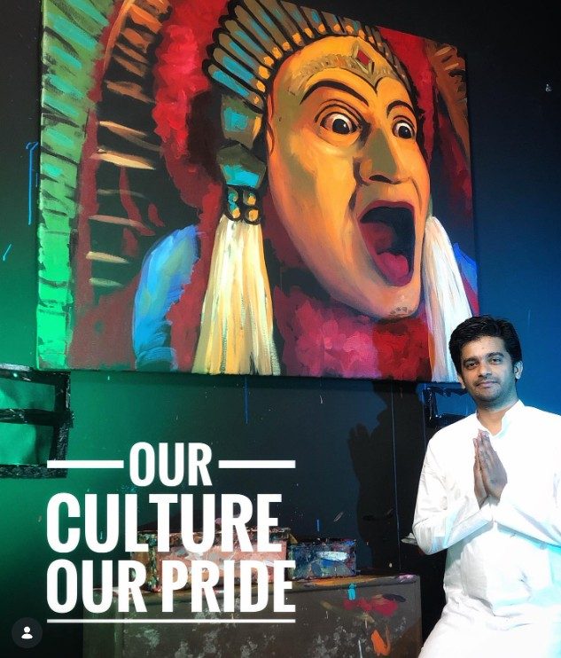
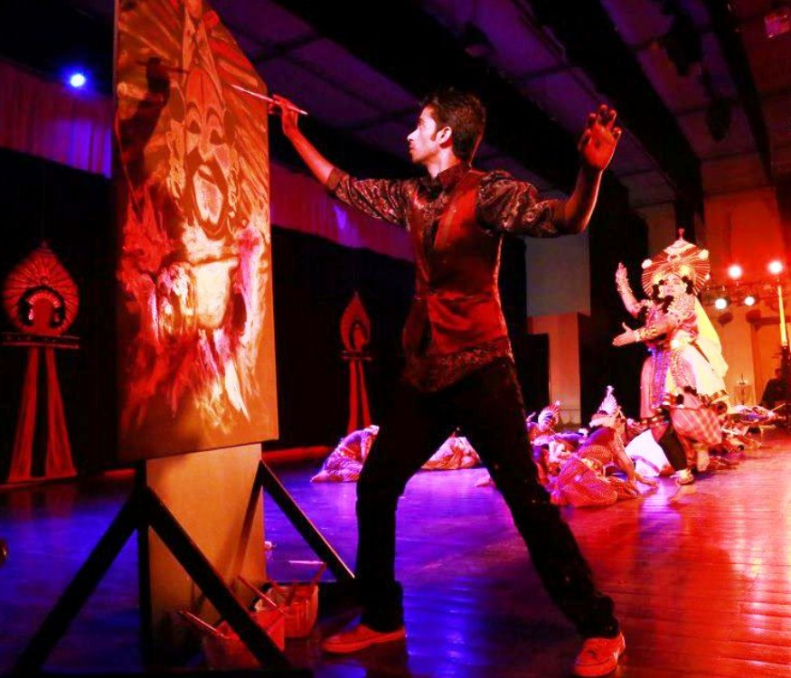

Shows

Asia’s Got Talent
Captivating audiences on Asia’s Got Talent with a breathtaking live painting performance that
transformed emotion into art within moments. His bold strokes, dramatic use of color, and powerful stage
presence created a deeply immersive visual story. The act stood out as a perfect blend of creativity, passion,
and theatrical expression.

Bhootakola
The powerful spirit of Bhoota Kola to life through an intense live painting performance rooted in ritual and tradition.
With bold movements and fiery colors, the artwork captures the raw energy, devotion, and divine presence of the folk deity.
The performance becomes a visual invocation, blending art, culture, and spirituality on stage.

Abdul Kalam
Vilas Nayak shares a warm and respectful moment with a revered national leader, reflecting recognition and appreciation
for his artistic journey. The interaction captures humility, inspiration, and the powerful connection between art and leadership.
Standing before a striking portrait, the moment symbolizes creativity being acknowledged at the highest level.

Pele
Vilas Nayak unveils a live portrait painting before an esteemed audience, capturing the likeness with warmth and expressive detail.
The moment reflects the power of art to honor leadership and legacy through live performance. Applause and admiration in the room
highlight the impact of creativity presented on a distinguished stage.

Kantara
Vilas Nayak stands beside a powerful live painting inspired by traditional folk expression and
the spirit of the *Kantara* movie, symbolizing cultural identity and pride. The artwork reflects deep-rooted
heritage brought to life through bold colors and expressive form. This moment honors age-old traditions through a
contemporary artistic performance rooted in cinematic and cultural influence.

Dalailama
A live portrait of the Dalai Lama, capturing compassion, humility, and spiritual grace. The painting becomes
a moment of reverence as art and spirituality meet in public space. This tribute reflects peace, respect, and
universal human values.

Yakshagana
In a dramatic stage setting, Vilas Nayak transforms movement and music into a dynamic live painting performance.
Each brushstroke unfolds in rhythm with the performance, creating a powerful visual narrative. The act blends theatre,
dance, and art into an immersive cultural experience.